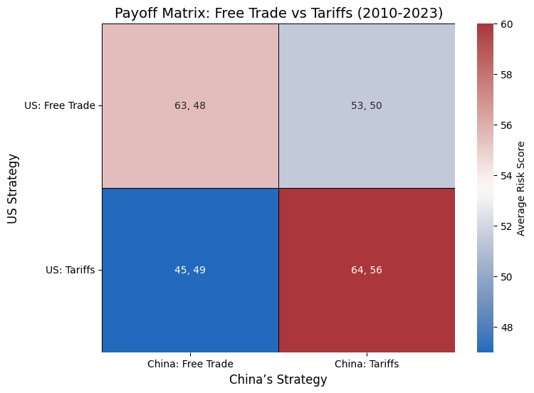

Domestic impacts of trade barriers
The debate over the impacts of tariffs, quotas, and other trade barriers is becoming increasingly relevant in today's global economic enviroment as trade relationships are being questioned around the world. Notibly the current administration of world's leading economic power (United States of America) both announcing and treating more protectionist policies and increased tariffs across the world. Proponents argue that increasing trade barriers is necessary to protect domestic industries and jobs. However, the data shows a different picture. Trade barriers like tariffs and quotas lead to less domestic competition as domestic industries face less pressure to innovate harming job growth. While export barriers prevent domestic industries from accessing foreign markets, reducing their growth potential and preventing the creation of higher skill jobs and industries. Additionally, Alternatives to trade barriers like subsities to key domestic industries can often be more effective. While the worsening relations between countries can complicate trade policies and instead of providing a better deal end up just producing worse outcomes.
Trade and Competition
Almost all economic theories will agree on the positive impacts of competition especially for the context of employment. Highly competitive industries employ more workers and offer greater wages as companies have to fight to attract the best talent. This theory is also supportated by empirical evidence from various industries around the world. The world bank relased a report in 2020 entitled "The Effects of Competition on Jobs and Economic Transformations", showed empirical evidence of this correlation. However, an argument could be made that foriegn producer don't compete for the same workers so the benifits of competion doen't apply. But that misunderstands why competition drives employment, employment increase as competition forces domestic corporations invest more in their workforce and other ajacent industries in an effort to keep up.
Trade and Specialization
Another benifit of free trade is the ability for a country to specialize in the production of goods and services that it can produce most efficiently. Without export tariffs domestic enterprises can afford to produce more as international demand increases and thus increase it employment footprint. This is supported by evidence, for example the NBER shows that tarifs lead to higher unemployment in medium to long termss.
Trade Barriers Alternatives
Oftentimes, alternatives are ignored in these debates; however, alternatives like domestic subsidies can be more effective in supporting key industries without the negative impacts of trade barriers. Subsidies as shown in the Chinese ev industry are able to prop up industry until the are self sufficient without the negatives of trade barriers.
Game Theory of Trade Barriers
Proponents of increased trade barriers sometimes agure that they are great negociting tools to achieve a better trade deal. However, Evidence has shown that the most common responce is retaliation and escalation. As with Usa-Canada and Usa-europe trade fiasco the general outcome seems to be retaliation and escalation. And the costs of retaliation has been proven to be significant and detremental to the welfare of the american populous. A paper entitled "Making America great again? The economic impacts of Liberation Day tariffs" showed that for the Liberation Day tariffs with retaliation the tariffs will result in worse welfare outcomes. The cost of retaliation and escalation often outweighs any potential benefits in the long run from trade negotiation.

next subtopic
This is the final subtopic block mentioned in your sketch.